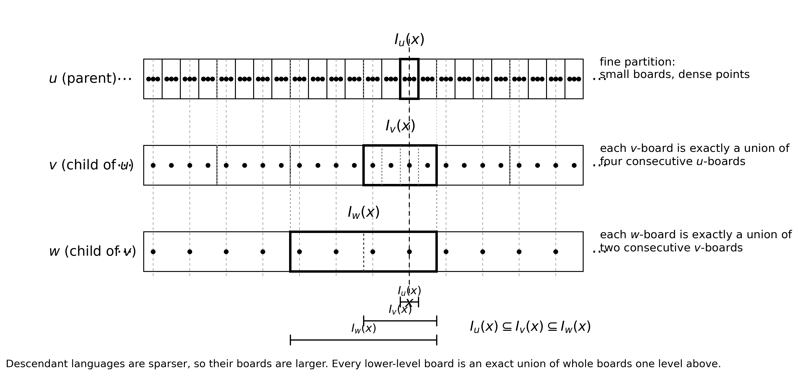

All 64 distinct numbered results were formalized in Lean 4 with Mathlib in two independent kernel-checked efforts, with AI assistance and statement-correspondence audits.
Abstract
Large language models sharpen the validity–breadth trade-off: a generator should avoid hallucinations without collapsing onto a narrow set of valid outputs. We study generation from positive examples of an unknown target in the Kleinberg–Mullainathan model, with arbitrary, possibly adversarial order and no distributional or computational assumptions. Breadth is measured by lower Banach density, which rules out arbitrarily large sparse holes, unlike prefix-based lower asymptotic density. 1. Exact optima in one dimension: For each target $K$ in a countable family, we characterize its optimal lower Banach density $b(K)$ via equivalent combinatorial and topological formulations. One eventually valid generator attains all $b(K)$ simultaneously. Every $α\in[0,1/2]$ occurs as $b(K)$ in some countable family; finite Cantor–Bendixson point rank guarantees $b(K)=1/2$, even without a uniform rank bound. 2. Unavoidable trade-offs in higher dimensions: For $d\ge2$, there need not be a single best generator: optimizing density for one target may worsen the guarantee for another. An explicit family quantifies this intrinsically multi-objective trade-off. 3. Complete characterization of density profiles: We characterize the full region of simultaneously achievable guarantees, with equivalent combinatorial and topological formulations, after excluding geometrically degenerate rectangles. Every prescribed product $\prod_i[0,α_i]$, $α_i\in[0,1/2]$ can occur as an exact achievable region for some language collection. 4. Near-half guarantees and the sharp endpoint: Under a near-logarithmic nondegeneracy condition, one generator achieves filtered density at least $1/2-\varepsilon$ at all finite-point-rank targets, for every $\varepsilon>0$, improving the previous polylogarithmic threshold. The exact $1/2$ endpoint can fail even for a rank-zero singleton family.
Problem
The paper studies language generation in the limit (Kleinberg–Mullainathan model) from adversarially ordered positive examples. The question is how much breadth, measured by lower Banach density, an eventually valid generator can guarantee for each target language.
Approach
In one dimension, the optimal density b(K) is characterized through equivalent combinatorial (obstruction-tree min–max of pairing scores) and topological (finite-evidence history topology) formulations. A matching adversarial upper bound and a single protected-forest generator show the bound is exact. In higher dimensions, filtered density is analyzed via a finite geometric stopping game, and the full region of simultaneously achievable profiles is characterized. All numbered results were machine-checked in Lean 4 with Mathlib.

Figure 2: Compatible boards along a forest path u\prec v\prec w . The language labels satisfy L_{w}\subseteq L_{v}\subseteq L_{u} , with descendant languages becoming progressively sparser. Each v -board is a union of consecutive u -boards, and each w -board is a union of consecutive v -boards.
Results
One generator attains every b(K) simultaneously in one dimension, and every value in [0,1/2] occurs as some b(K). For d≥2 simultaneous optimality can fail by a constant 1/16, and achievable regions are fully characterized. A near-half guarantee holds for finite-rank targets under a log^{1+τ} threshold. Two Lean efforts verified all 64 distinct numbered statements.